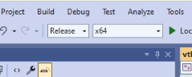
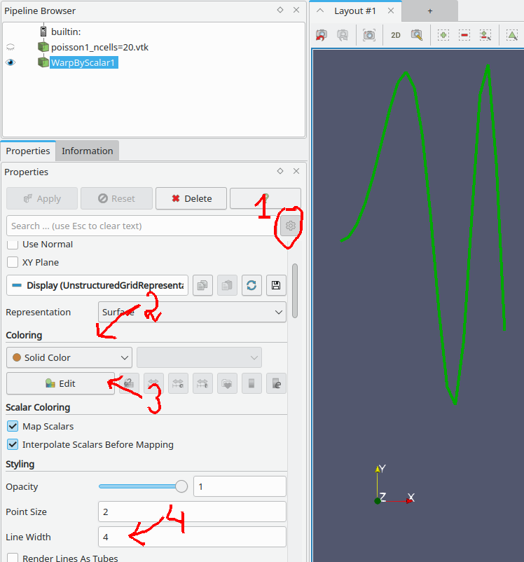

Git
Основные команды
Все команды выполнять в терминале (git bash для виндоус), находясь в корневой папке проета CFDCourse24.
- Для смены директории использовать команду cd. Например, находясь в папке A перейти в папку A/B/C > cd B/C
- Подняться на директорию выше > cd ..
- Просмотр статуса текущего репозитория: текущую ветку, все изменённые файлы и т.п. > git status
Сохранить и скоммитить изменения в текущую ветку
> git add .> git commit -m "message""message" – произвольная информация о текущем коммите, которая будет приписана к этому коммиту
Переключиться на ветку main
> git checkout mainработает только в том случае, если все файлы скоммичены и статус ветки 'Up to date'
Создать новую ветку ответвлённую от последнего коммита текущей ветки и переключиться на неё
> git checkout -b new-branch-namenew-branch-name – имя новой ветки. Пробелы не допускаются
Эта комманда работает даже если есть нескоммиченные изменения. Если необходимо скоммитить изменеия в новую ветку, сразу за этой командой нужно вызвать
> git add .> git commit -m "message"Сбросить все нескоммиченные изменения. Вернуть файлы в состояние последнего коммита
> git reset --hardВсе изменения будут утеряны
- Получить последние изменения из удалённого хранилища с обновлением текущей ветки Работает только если статус текущей ветки 'Up to date'.> git pull
Если требуется получить изменения, но не обновлять локальную ветку:Обновленная ветка будет доступна по имени origin/{имя ветки}.> git fetch - Просмотр истории коммитов в текущей ветке (последний коммит будет наверху) > git log
- Просмотр доступных веток в текущем репозитории > git branch
Просмотр актуального состояние дерева репозитория в gui режиме
> git guiДалее в меню Repository->Visualize all branch history. В этом же окне можно посмотреть изменения файлов по сравнению с последним коммитом.
Альтернативно, при работе в виндоус можно установить программу GitExtensions и работать в ней.
Порядок работы с репозиторием CFDCourse
Основная ветка проекта – main. После каждой лекции (в течении 1-2 дней) в эту ветку будет отправлен коммит с сообщением "after-lect{index}". Этот коммит будет содержать краткое содержание лекции, задание по итогам лекции и необходимые для этого задания изменения кода.
Перед лекцией в эту ветку будет отправлен коммит с сообщением "before-lect{index}". Этот коммит содержит изменения кода для работы на лекции.
Таким образом, после лекции необходимо выполнить следующие команды (находясь в ветке main)
Перед началом лекции, если была сделана какая то работа по заданиям
Даже если задание выполнено не до конца, вы в любой момент можете переключиться на ветку с заданием и его доделать
Если ничего не было сделано (или все изменения не представляют ценности), можно повторить алгоритм "после лекции".
Сборка и запуск
Запуск конкретного теста
По умолчанию программа cfd_test прогоняет все объявленные в проекте тесты. Иногда может возникнуть необходимость запустить только конкретный тест в целях отладки или проверки. Для этого нужно передать программе аргумент с тегом для этого теста.
Тег для теста – это второй аргумент в макросе TEST_CASE, записанный в квадратных скобках. Добавлять нужно вместе со скобками. Например, "[ping]".
Чтобы добавить аргумент в VisualStudio, необходимо в контекстном меню проекта cfd_test выбрать опции отладки

и там в поле Аргументы прописать нужный тэг.

В VsCode аргументы нужно добавлять в файле .vscode/launch.json в поле args в кавычках (см. картинку с настройками launch.json).
Сборка релизной версии
Релизная сборка программ даёт многократное увеличение производительности, но при этом отладка приложений в таком режиме невозможна.
Visual Studio
- Создать папку
build-releaseрядом с папкойbuild. - Скопировать в неё файл
winbuild64.batиз папкиbuild. - В скопированном файле произвести замену Debug на Release -DCMAKE_BUILD_TYPE=Release ..
- Запустить
winbuild64.batиз новой папки - Открыть build-release/cfdcourse24.sln в
Visual Studio - В проекте студии установить релизную сборку 
- Это новое решение, не связанное настройками с
debug-версией. Поэтому нужно заново настроить запускускаемым проектомcfd_testи, если нужно, настроить аргументы отладки. - Бинарные файлы будут скомпиллированы в папку
CFDCourse24/build_release/bin/Release. В случае работы через отладчик выходная директория –CFDCourse24/build_release/src/test/.
VSCode
- Выбрать релизную сборку в
build variant - Нажать
Build - Назать
Launch
Paraview
Отображение одномерных графиков
Заданные на сетке данные паравью показывает цветом. Поэтому при загрузке одномерных графиков можно видеть следующую картинку
В первую очередь нужно развернуть изображение в плоскость xy

Далее, для того, что бы данные отображались в качестве значения по оси ординат, к загруженному файлу необходимо
- применить фильтр WarpByScalar (В меню Filters->Alphabetical->Warp By Scalar)
- в меню настройки фильтра указать поле данных, для отображения (numerical в примере ниже)
- И настроить нормаль, вдоль которой будут проецироваться данные (в нашем случае ось y)

Чтобы настроить цвет и толщину линии нужно
- Включить подробные опции фильтра
- Сменить стиль на Solid Color
- В меню Edit выбрать желаемый цвет
- В строке Line Width указать толщину линии 
Настрока масштабов и отображение осей координат:
- Отметье подробные настройки фильтра
- В поле Transforming/Scale Установите желаемые масштабы (в нашем случае растянуть в два раза по оси x)
- Установите галку на отображение осей
- откройте меню натройки осей
- В нём включите подробные настроки
- И также поставьте растяжение осей
В случае, если мастабировать график не нужно, достаточно выполнить шаг 3.

Если требуется нарисовать рядом несколько графиков для разных данных из одного файла, примените фильтр Warp By Scalar для этого файла ещё раз, изменив поле Scalars в настройке фильтра. Для наглядности измените имя узла в Pipeline Browser на осмысленные
В случае, если исходный файл был изменён, нужно в контекстном меню узла соответствующего файла выбрать Reload Files (или нажать F5). Если те же самые фильтры нужно применить для просмотра другого файла нужно в этом меню нажать Change File.
Отображение изолиний для двумерного поля
- Нажмите иконку Contour (или Filters/Contour) (1 на рисунке) В настройках фильтра Contour by выберитее данные, по которым нужно строить изолинии.
- В настройках фильтра удалите все существующие записи о значениях для изолиний (2 на рисунке)
- Добавьте равномерные значения (3 на рисунке). В появившемся меню установите необходимое количество изолиний и их диапазон.
- Если необходимо, включите одновременное отображения цветного поля и изолиний (4 на рисунке).
В случае, если нужно сделать изолинии одного цвета, установите поле Coloring/Solid color в настройках фильтра. Там же в меню Edit можно выбрать цвет.
Для установления толщины линии включите подробные настройки и найдите там опцию Styling/Line Width.

Отображение двумерного поля в 3D
По аналогии с одномерным графиком, двумерные поля так же можно отобразить, проектируя данные на геометрическую координату для получения объёмного графика.
- Включите фильтр Filters/Warp By Scalar
- В настройках фильтра установите данные, которые будут проектироваться на координату z
- Установите нормаль для проецирования (ось z)
- Если нужно, выберите масштабирования для этой координаты
- После нажатия Apply включите трёхмерное отображение
- Если данные не видно, обносите экран.

Отображение числовых данных для точек и ячеек
- Включить режим выделения точек или ячеек (иконка (1 на рисунке) или горячие клавиши s, d)
- Выделить мышкой интересующую область
- В окне Find data (или Selection Inspector для старых версий Paraview) отметить поле, которое должно отображаться в центрах ячеек и в точках (2 на рисунке). Если такого окна нет, включить его из основного меню View.
Отображение векторов скорости
Открыть файл vtk или vtk.series, который содержит векторное поле. Далее
- Создать фильтр Glyph
- Задать двумерный тип стрелки
- Сместить центр стрелки, чтобы она исходила из точки, к которой приписана
- Отметить необходимое векторное поле в качестве ориентации
- Отметить необходимое векторное поле для масштабирования Нажать Apply.
Далее
- Выбрать необходимый Glyph-mode. Если сетка небольшая, то можно
All Points. - Установить белый цвет для стрелок Нажать Apply.
Если разброс по длинам стрелок слишком велик, его можно подравнять, введя новую функцию \(abs(\vec v)^{0.8}\) - длина вектора в степени меньше единицы. Для этого
- Начиная от загруженного файла создать фильтр Calculator
- Там вбить необходимую формулу
Фильтр Glyph создавать уже от Calculator-а.
- В Scale Array фильтра Glyph указать уже результат работы Calculator-a (Result по умолчанию).
- Подтянуть значение Scale Factor до приемлимого
- Не забыть отключить вспомогательное поле Calculator из отображения
CMake
Добавление файла в проект
Для добавления нового ресурсного файла наобходимо прописать его в соответствующий CMakeLists.txt.
- Если файл добавляется в библиотеку
cfd, тоsrc/cfd24/CMakeLists.txt - Если файл добавляется в тестовое приложение, то
src/test/CMakeLists.txt
Заголовочные файлы (расширение hpp) прописывать в список HEADERS, компилируемые (расширение cpp) прописывать в SRC.
При работе с VisualStudio (если он запущен) после изменения cmake-файла необходимо построить проект ZERO_CHECK вызвав контекстное меню и вызвав Build для обновления файлового дерева.
В результате должен появится диалог с предложение обновить проект. Надо нажать Reload All (Обновить всё).
Построение одномерных графиков в логарифмических осях
Рабочие программы, применяемые в курсе, выводят расчётные данные в консоль. И часто возникает необходимость построить по этим данным одномерные графики.
Например, программа вывела
И нужно построить по этой таблице график с двумя кривыми, где по оси x – первый столбец, а по оси y – два остальных.
Если речь идёт о графиках сходимости, то строить нужно в логарифмических координатах.
Для построения необходимо скопировать эти данные в буфер обмена и далее следовать одной из нижеследующих процедур.
Excel
Вставьте текст из буфера обмена.
Если разделения текста по ячейкам не произошло, выделите необходимые ячейки и вызовите комманду Текст по столбцам из контекстного меню или из вкладки Данные
Если система не воспринимает точку как десятичный разделитель, запустите алгоритм find and replace нажав Ctrl+H и замените точки на запятые.
Когда программа будет воспринимать вставленные числа именно как числа, они будут выровнены по правой стороне ячейки.
Далее, если необходимо построить логарифмический график, напишите функцию перевода первой ячейки в десятичный логарифм
и растяните эту ячейку с формулой вниз и вправо.
Для построения графика по данным,
- Выберите столбцы, которые необходимо использовать для построения
- На вкладке
Вставкавыберите Точечную диаграмму с прямыми отрезками и маркерами
LibreCalc
Вставьте текст из буфера обмена.
Если разделения текста по ячейкам не произошло, выделите необходимые ячейки и вызовите Data/TextToColumns
Если система не воспринимает точку как десятичный разделитель, запустите алгоритм find and replace нажав Ctrl+H и замените точки на запятые.
Когда программа будет воспринимать вставленные числа именно как числа, они будут выровнены по правой стороне ячейки.
Далее, если необходимо построить логарифмический график, напишите функцию перевода первой ячейки в десятичный логарифм
и растяните эту ячейку с формулой вниз и вправо.
Для построения графика по данным,
- Выберите столбцы, которые необходимо использовать для построения и в меню вызовите
Insert/Chart, - При настройке графика
XY (Scatter), Points and Linesи нажмитеFinish,- Если необходимо, настройте отображение сетки, интервал и шаг по осям.
Octave/Matlab
В терминал Octave/Matlab скопируйте строчки
Потом там же напечатайте
и вставьте из буфера обмена вашу матрицу. После этого закройте скобку ] и нажмите enter.
Далее для построения простого графика введите
и логарифмического
Чтобы построить другой график, опять определите матрицу
и далее. Повторять первый пункт (если не производился перезапуск сессии) не нужно.
Python
Нужен установленный в системе питон и библиотека matplotlib.
Для установки matplotlib вызовите в консоли
Далее возьмите текст программы ниже и сохраните его в текстовый файл plotmat.py.
Из терминала (находясь в папке, где лежит сохранённая вами программа plotmat.py) запустите
или
Далее вставьте в терминал скопированную в буфер матрицу и нажмите ввод два раза.